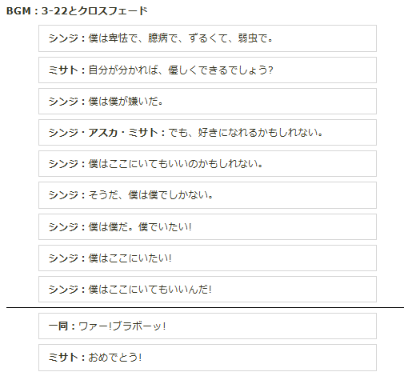

こんにちは、ザクザク食感です。
漠然と心が沈んで、タイガキングダム後2時間ベッドから動けなかった。
何かあったわけでもなく毎日同じことの再放送の日々なのだが、その日々の中でほんのり食らっているダメージが急に可視化されることがある。
例えば今日は、頑張れば数時間で終わる仕事を納期2日で任された。それ自体は楽なのでむしろありがたいのだが、タスクを済ませて残った時間を他の技術の勉強に充てるわけでもなく、絵を描いたり自分の好きなことをするわけでもなく、ただぼーっとして過ごしてしまった。
気分が沈んでいないときは楽できてラッキーくらいにしか思わないが、会社の他の人が副業がどうとか昇給がどうとか人生設計がどうとか言っているのを聞くとダメージを食らう。
そういう事象の積み重ねでずっとちょっと疲れ続けている。
気分が下がり始めてそういうことが気になり始めたとき、自分を肯定できる材料がないもないことを再認識した。
何かを継続して何かを成せたことがない。胸を張って「自分はこれができます！」と言えるものがない。絵やブログは続いている方だと思うけど、偶然発生する衝動に任せているだけだし、たくさんの人に見られるのも怖いから人に見られるための努力もできない。このブログはGoogleで検索してもヒットしないようにしています。
自己肯定のためには居場所が大切だと思う。ここにいていいんだ、と思えれば自分を肯定できると思う。ツイッターは所在地ではあるけど、居場所だという実感はあまりない。何か大きな流れに所属しているわけでもなく、フォロワー一人一人の人生の一部を覗き見させてもらっているといった感覚の方が近い。
大きな流れの中にいればしたいことが見つかる、とオモコロの原宿さんが言っていたけど、そういった流れに所属することができない。それをするには人のことを恐れすぎている気がする。自分から話しかけて拒絶されるのがあまりに怖すぎる。
じゃあどうすればいいんですか！と思ったとき、アニメ版のエヴァの最後でシンジ君が「ここにいていいんだ！」と気づけたことを連想した。
シンエヴァのシンジ君は自分のことはいいから、自分を助けてくれた人を助けたいと思えるように成長できていたけど、僕はこんな自分語りブログを続けているくらいなので、全然その域には達せていないと思う。でもアニメ版のシンジ君からは何か学べることがあるかもしれない。
そこでアニメ版エヴァのことを思い出そうと思ったけど、どういう経緯でシンジ君は補完されたのか全く思い出せない。アニメのエヴァはそこそこ見ているけど、いつもカヲル君を殺したあたりから話の内容を理解できない。
正月休みにもアニメ版エヴァを全部見直しているのだが、思い出すためにまた見直そうと思い、Netflixを開いた。
契約が切れていた……もう見ないであろうことを見越して契約を切ったときに限って見たいものが現れる！！！
他の手段がないか検索してみると、セリフを書き起こしたwikiが出てきた。
そのwiki
wikiを読んだ。文字にするとすごくわかりやすい！
で、終盤のシンジ君が自分がここにいてもいいと気づくシーンを見ると、

いきなり気づくんかい！！！！！！！！！！！！
何のきっかけもないんかい！！！！！！！！！！！
キレてしまった。旧劇にも何かあったかな～と思ったけど、あれはシンジ君がただ他人もいる世界を望んだだけだったと思うので、エヴァとしての終わりではあるけど心に決着がついているわけではなかったと思う（確証がないのでまた見直そうかな）。
僕もおめでとうってされたい。でも何にも気づけていないし変われていない。エヴァに乗ることもできない。
結局全部自分次第、ってことなのかな 悩みながら居場所を探して生きていこうと思います。
それでは、さようなら。